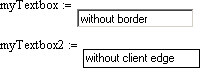

Text Box Formatting Properties |
The AutoSize property sets or gets whether autosize is active. If AutoSize is off, the content text may not be visible if it extends beyond the boundaries of the text box.
bMode = TextBox.AutoSize
TextBox.AutoSize = bMode
Element |
Description |
bMode |
True indicates that autosize is active; false indicates that autosize is inactive. |
The BackColor property sets or gets the background color for the control, the ForeColor property sets or gets the foreground color for the control.
OLE_COLOR = TextBox.BackColor |
OLE_COLOR = TextBox.ForeColor |
Element |
Description |
OLE_COLOR |
Any 6-digit valid hexadecimal number representing an RGB color. For example, FFFFFF is the hexadecimal representation of white; 000000 is the hexadecimal representation of black. |
The Border property sets or gets whether the text box has a border. The ClientEdge property sets or gets whether the text box has a client edge, the grey inner edge giving the text box an inset appearance.
bMode = TextBox.Border |
bMode = TextBox.ClientEdge |
Element |
Description |
bMode |
True indicates that a border or a client edge is visible; false indicates that it is not. |

The HorizontalScroll property gets or sets whether a horizontal scrollbar is visible in the text box. The LeftScrollBar property gets or sets whether a vertical scrollbar is shown on the left side of the text box. The VerticalScroll property gets or sets whether a vertical scrollbar is shown on the right side of the text box. These are useful for multiline text boxes.
bMode = TextBox.HorizontalScroll or TextBox.LeftScrollBar or TextBox.VerticalScroll
TextBox.HorizontalScroll or TextBox.LeftScrollBar or TextBox.VerticalScroll = bMode
Element |
Description |
bMode |
True indicates that the specified scrollbar is visible; false indicates that it is not. |
The Lowercase and Uppercase properties set or get the default case of the text typed in the text box.
bMode = TextBox.Lowercase |
bMode = TextBox.Uppercase |
Element |
Description |
|
bMode |
True indicates that the added text will be converted to the selected case; false indicates that this is not enforced. |
The Multiline property sets or gets whether a text box can have multiple lines of text. The DisableNoScroll property sets or gets the scrollbar style of a multiline text box. When true, the text box shows a disabled vertical scroll bar when the text box does not contain enough items to scroll. When false, the scroll bar is hidden when the text box does not contain enough items.
bMode = TextBox.Multiline |
bMode = TextBox.DisableNoScroll |
Element |
Description |
bMode |
True indicates that the text box can have multiple lines, or that a disabled vertical scrollbar is shown when there are insufficient lines; false indicates that it can not have multiple lines, or that there is no scrollbar for insufficient lines. |
The NoHideSelection property sets or gets whether a text box control retains any selected text displayed in reverse video when the control loses input focus.
bMode = TextBox.NoHideSelection
TextBox.NoHideSelection = bMode
Element |
Description |
bMode |
True indicates that the text box retains the selection; false indicates that it does not. |
The RightAlignedText property sets or gets a value that determines whether the text is right-justified. Right justification is often useful for numerical inputs.
bMode = TextBox.RightAlignedText
TextBox.RightAlignedText = bMode
Element |
Description |
bMode |
True indicates that the text is right-justified; false indicates that it is not. |